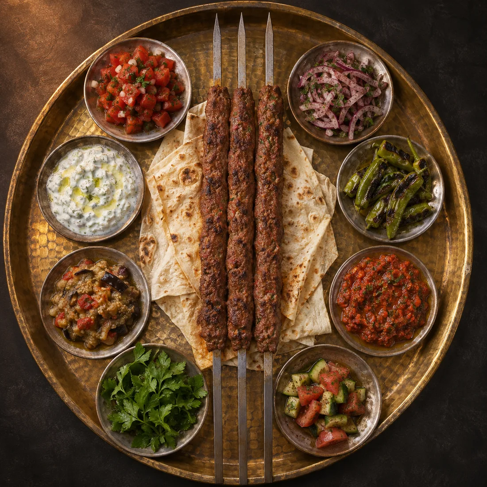
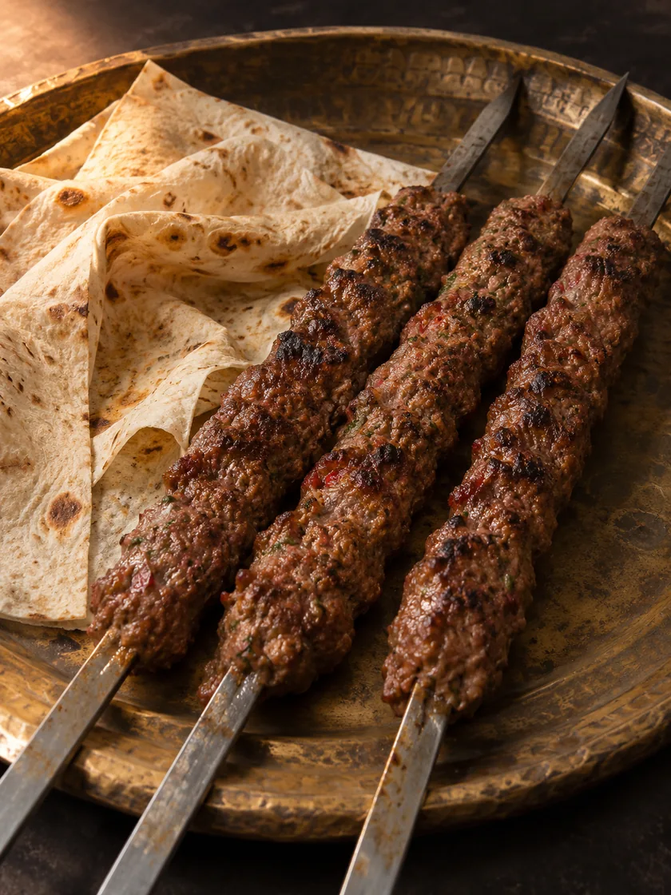

Asmalı Mescit · Beyoğlu
Ortaya bir tepsi.
Kebap ortada. Meze etrafında.
Sofra, paylaşınca güzel.

01 — Bilice Sofrası
Bir tepsi.
Aynı sofra.
Ortadaki kebaptan etrafındaki küçük tabaklara. Sofrayı birlikte keşfedelim.
Izgaradan çıkan kebap, tepsinin ortasında.
Bir lezzet seç, tepsideki yerini keşfet.
03 — Biraz daha yakından
Sofranın detayları.


Görseller temsilidir.
İstanbul · Beyoğlu